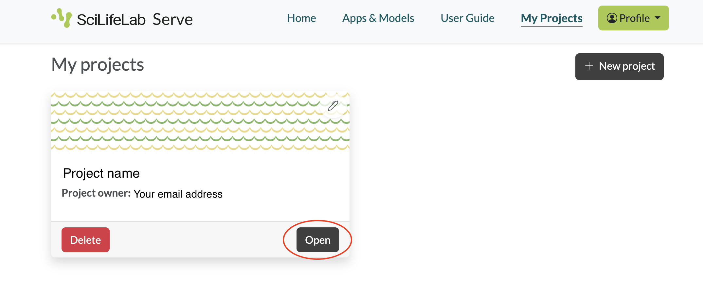
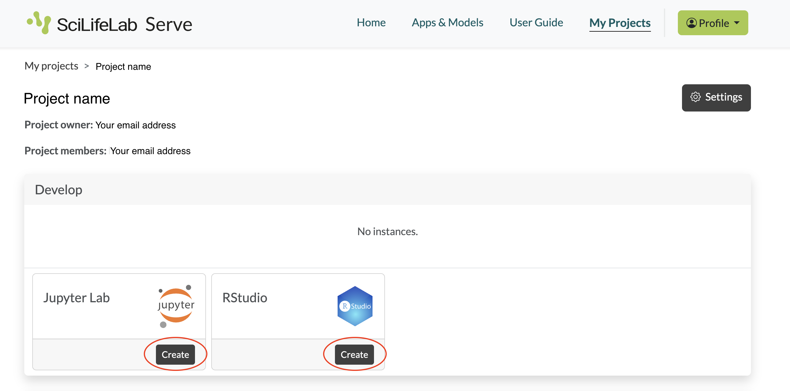
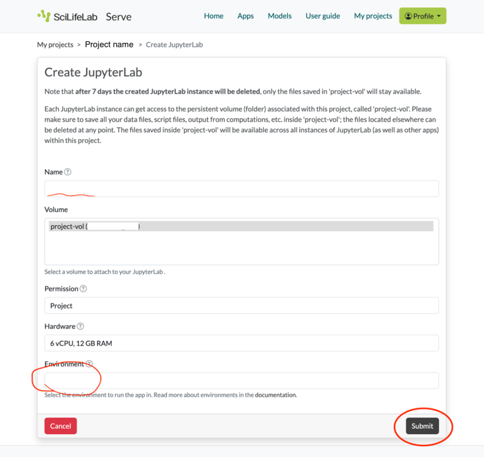
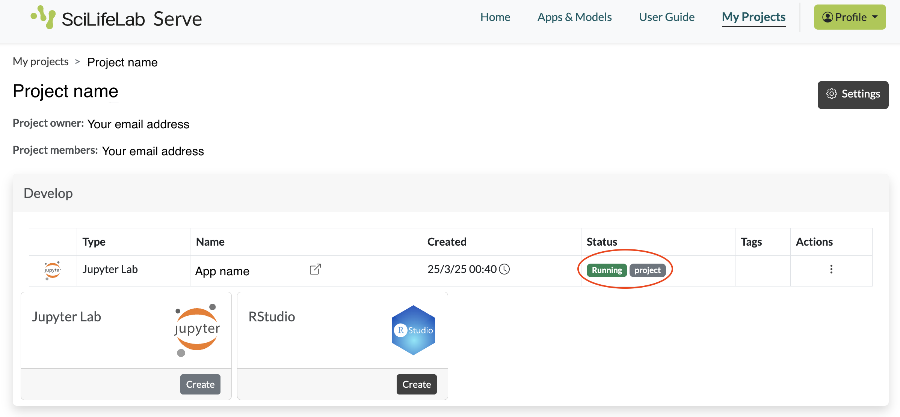

Practicals
Introduction
This course includes multiple practical exercises. During the four days we will go through practical 0 to 9 (more info in the schedule). Each practical has a dedicated directory in the repository under the practicals/ directory. Each practical directory includes:
- One or more notebooks with names starting with Practical[number] or p[number]. For example, for practical 1, we have a notebook called
Practical1_Segmentation_Cellpose.ipynb - A directory (
env) with environment files - Any other files necessary for running the labs
Working on the practicals
Participants of the course are recommended to use SciLifeLab Serve to run the practical exercises. If you are not a participant in the course but want to run the practicals, please see “Working locally” below.
SciLifeLab Serve is an app-hosting platform provided by SciLifeLab Sweden. All participants registered to the course will gain access to a project that has been designed for the course. In order to gain access to this project, a SciLifeLab Serve account is needed. If you do not already have an account, please follow these instructions.
Option 1: On SciLifeLab Serve (recommended)
Log onto https://serve.scilifelab.se
When your course project has been created, you can find it under My projects in the main menu. Click Open.

- In the project, you can create Jupyter Lab apps and RStudio apps. Each practical requires its own app with its own environment. Jupyter Lab is used for all practicals except practical 7, which uses RStudio. To reduce memory usage, create the app only when you will start the practical, and delete the app after you have finished it. Choose the appropriate app and click Create.

- You will now see a form to configure a notebook server. Under Name put the name of your choice, e.g. the practical name. Select the Docker image for the practical you want to run. Leave the rest of the fields unchanged. Now click Submit.

- The notebook server will now be created for you. Wait a few minutes to see the status Running in green.

If the status does not turn to Running within 5 minutes, click on the three dots under Actions and then Delete. Wait a few minutes until you see the status Deleted. Now you can refresh the page and create a new instance starting from step 3.
Click on the app name to open it in a new tab. If you are prompted for a password, input
spatial.Once your app is open, download the files required for the practicals (notebooks, data and any other relevant files). You can download one practical at a time or all practicals at once. In a terminal window in the app, run
bash download_labs.sh [practical number]
## or
bash download_labs.sh all- Your practical should now be available under
work/practical_[number]. Open the notebook.
In rare cases it may happen that your notebook server suddenly restarts. This could be due to an error that affected the notebook globally (for example, it ran out of temporary memory). You will see this on the page where you are working. A new notebook will start for you at the same URL within a few minutes.
Storage
In the case of both JupyterLab and RStudio you have access to persistent storage. This is mounted to the folder /home/nbis/work (Jupyter) or /home/rstudio/work (RStudio). Files stored in this folder (NB: only in this folder) will be available even if a notebook suddenly restarts as well as between apps. You can also use a File Manager to manage these files (view, download, upload) outside of the apps. On the project page, scroll down to “Manage files” and click Create, then Activate on the next page, and finally open the file manager in the same way as the other apps.
Option 2: Working locally
If you do not have access to the course on SciLifeLab Serve, you can work locally with Docker.
The container images for each practical are in the elixir-europe-training namespace on dockerhub, find them here. The naming convention is practical-[number]-[IDE]-latest. In order to run them locally, you can use the following command (example given for practical 0):
docker run \
--rm \
--platform=linux/amd64 \
-p 8888:8888 \
-v $PWD:/home/nbis/work/ \
-e JUPYTER_ENABLE_LAB=yes \
ghcr.io/elixir-europe-training/elixir-sco-spatial-omics-2026:practical-0-jupyter-latestJupyter lab should now be available from localhost:8888. Use password spatial when prompted.
For the RStudio image of practical 7, the equivalent would be:
docker run \
--rm \
--platform=linux/amd64 \
-p 8787:8787 \
-v $PWD:/home/rstudio/work/ \
ghcr.io/elixir-europe-training/elixir-sco-spatial-omics-2026:practical-7-rstudio-latestAccess Rstudio at localhost:8787.
Once the you have accessed the app, see steps 7 and 8 above.